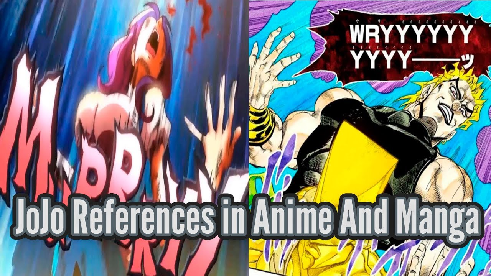
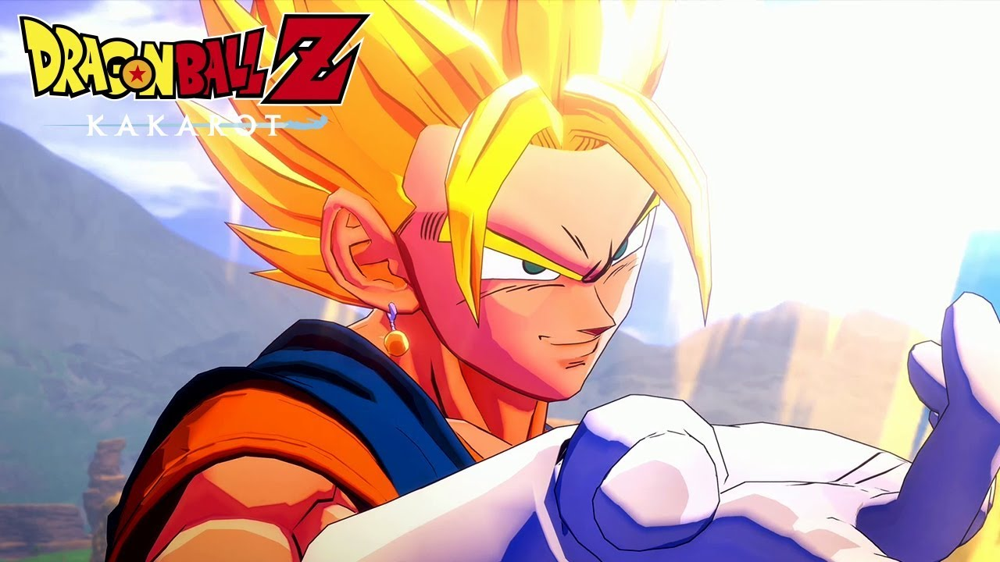

References

In anime, maar ook westerse cartoons heb je onderling een aantal references. Ze verwijzen dan naar een andere anime of naar westerse films. In My Hero Academia
is er bijvoorbeeld een reference naar Star Wars, waar ze een ziekenhuis "The Jakku General Hospital" noemen. Ook in the cartoon The Amazing World of Gumball
hebben ze een reference naar Dragon Ball Z, waar Gumball "Super Saiyan" probeert te gaan, een beroemde transformatie van de Dragon Ball franchise.
Een andere bekende reference die heel vaak in andere anime wordt gebruikt is de "JoJo reference". Het komt van de anime JoJo's Bizarre Adventure. De anime is
door de references erg bekend geworden, maar ook door de rare en grappige scenes die bij een hoop mensen bijblijven. Eentje is de "wryyy" die gebruikt wordt als
JoJo reference. Zie het plaatje voor de "wryyy" reference.
Games
Als een anime goed loopt, dan kunnen er zelfs games gemaakt van worden. Dragon Ball heeft best wel een hoop games, maar is ook best wel oud en lang beroemd.
Maar een anime die veel minder oud is dan Dragon Ball, is Attack On Titan om als voorbeeld te nemen. Die heeft twee games en loopt ook best wel goed.
Ik heb er een aantal gespeeld en een aantal van vrienden gezien. Hieronder twee lijstjes met een paar voorbeelden.
Dit zijn een aantal aanraders voor als je anime games wilt spelen die een soort samenvatting zijn van de anime zelf.
- Dragon Ball Z Kakarot
- Attack On Titan 2: Final Battle
- My Hero One's Justice 1 & 2
- Naruto Ultimate Ninja Storm 1-4
En hier nog een paar andere games die niet persé een samenvatting zijn
- Dragon Ball Fighterz
- Jump Force
- Seven Deadly Sins : Knights of Britannia
- Sword Art Online : Hollow Realization